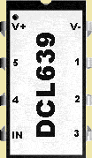
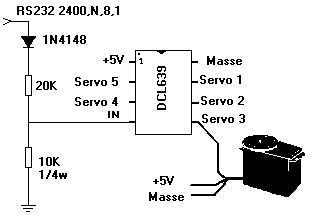
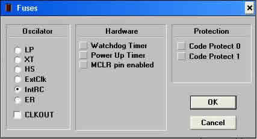

Le composant
Le circuit utilisé pour simuler le FT639 est un microcontrôleur de Microchip, le PIC12C671. Ce microcontrôleur à faible prix est doté de 8 pins utilisées de la façon suivante :

pin 1 V+ : +5V
pin 8 V- : 0V
pin 4 IN : Entrée liaison série
pins 2, 3, 5, 6, 7 : Vers ligne de commande des servos 1, 2, 3, 4, 5.
Le PIC12C671 est un microcontrôleur RISC, c'est-à-dire qu'il n'utilise qu'un nombre réduit d'instructions (35). La majorité de ces instructions s'exécutent en 400 nS à 4 MHz. Il possède 1028 mots de 14 bits de mémoire de programme et 128 octets de RAM (ce qui suffit largement pour cette application) ainsi qu'un timer 8 bits, un convertisseur A/N 8 bits (non utilisé) mais pas d'UART (Universal Asynchronous Receiver Transmitter). Le PIC12C508 aurait pu convenir s'il avait eu des possibilités d'interruptions, notamment pour le Timer0.
Le microcontrôleur s'accommode d'une alimentation comprise entre 2.5V et 5.5V ; cependant, les servos fonctionnant sous 4.8V, il est nécessaire d'alimenter le tout avec une tension de 5V régulée. La consommation en courant du PIC est de l'ordre de 2 mA @5V 4 MHz. Aucun composant externe n'est nécessaire pour l'horloge du PIC12C671 grâce à l'horloge interne (IntRC) à 4 MHz du composant. Il importe cependant que le logiciel calibre cette horloge pour obtenir une précision optimum.
La figure 2 décrit comment brancher la liaison RS232 et un servo, c'est très simple !

Branchement du DCL639 à une RS232 (+10V/-10V). Le diviseur de tension permet d'obtenir sur l'entrée IN des niveaux de tension admissibles pour le PIC. Vérifiez que l'alimentation des servos, qui peut être commune avec le DCL639, est en mesure de fournir l'intensité requise par le moteur des servos.
Si vous connectez le DCL639 à un BASIC Stamp, les résistances et la diode sont inutiles. Les commandes envoyées sur la liaison série doivent alors être inversées (au sens logique du terme). C'est-à-dire que le BASIC Stamp est programmé : SEROUT x,N2400,... Le bit START est un '1' logique et le STOP un '0', les autres bits sont également inversés (voir la Fig. 3, paragraphe « Le logiciel »).
Format de la liaison série : 2400 bauds, 8 bits, pas de parité (2400,N,8,1).
Pour programmer le PIC12C671, une multitude de programmateurs existent. J'utilise celui créé par Bojan Dobaj, le P16PRO. La partie électronique (P16pro40_hard.PDF ou P16pro40_hard.zip), connectée au port parallèle d'un PC, est très simple à réaliser et ne nécessite que quelques composants.
Si vous souhaitez programmer d'autres types de PIC, je vous suggère, si vous ne pouvez pas placer un support à force d'insertion nulle universel, de câbler des supports « tulipe » de bonne qualité à 40, 28 (étroit), 18 et 8 pts. Les supports 18 et 8 pts sont câblés entre les contacts du support 40 pts, et le support 28 pts étroit est monté sur un support 28 pts standard à l'aide d'un petit morceau d'époxy.
Le logiciel, mis à jour régulièrement, est disponible sur le site : geocities.com/SiliconValley/Peaks/9620 (licence 20$). Une nouvelle version plus complète (sous Windows), le « PICALL ver. 0.10c » (11/2001), est également téléchargeable sur ce site. Cette version commande les programmateurs P16PRO et PICALL.

Si vous voulez plus d'informations sur le PIC12C671, consultez son datasheet chez Microchip : microchip.com.
← Retour à l'accueil